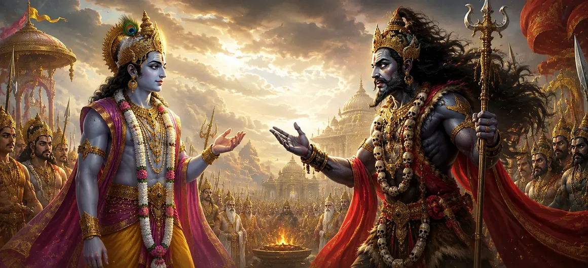

This chapter recounts the significant dialogue between Lord Viṣṇu and Vīrabhadra at Dakṣa’s sacrifice. As the forces of divine justice approached and tension filled the sacrificial grounds, Viṣṇu and Vīrabhadra exchanged profound words concerning duty, devotion, righteousness, and the will of the Divine. Their conversation revealed that although different divine beings may appear to act in different ways, all ultimately serve the cosmic order established by the Supreme Reality.
As Vīrabhadra advanced toward the sacrificial grounds, he encountered Lord Viṣṇu. Both possessed immense divine power and unwavering dedication to their sacred responsibilities. Their meeting was not born of hostility but of the need to fulfill their respective duties within the cosmic plan.
Vīrabhadra explained that he had been created by Lord Shiva to carry out divine justice. His purpose was not personal vengeance but the restoration of righteousness after the grave insult directed toward Shiva and Sati. He expressed complete devotion to Shiva’s command.
Lord Viṣṇu responded by emphasizing the importance of duty and responsibility. He explained that every divine being must fulfill the role entrusted to them. Through His words, Viṣṇu demonstrated that true service to the Divine requires dedication, wisdom, and respect for cosmic order.
Despite representing different aspects of the Divine, Viṣṇu and Vīrabhadra recognized each other's devotion and purpose. Their dialogue reflected mutual respect and revealed that true spiritual greatness lies in understanding the Divine will rather than seeking personal recognition.
Every being has a role to fulfill within the Divine plan.
Different divine powers ultimately work together to uphold cosmic harmony.
True devotion is strengthened by wisdom and understanding.
Although the dialogue was respectful and profound, the tension surrounding Dakṣa’s sacrifice remained. The forces of destiny continued to move forward, and all present understood that the events set into motion could not easily be reversed.
As the conversation concluded, the atmosphere grew increasingly intense. The time for words was nearing its end, and the consequences of Dakṣa’s actions were about to unfold before the eyes of gods, sages, and celestial beings alike.
This chapter teaches that devotion and duty are not opposing forces but complementary aspects of spiritual life. Lord Viṣṇu and Vīrabhadra demonstrate that true greatness lies in faithfully fulfilling one's responsibilities while maintaining respect for the Divine purpose that guides all creation.
Despite the respectful exchange with Lord Viṣṇu, Vīrabhadra remained unwavering in his mission. He understood that he had been manifested by Lord Shiva for a sacred purpose and that divine justice could not be delayed. His determination reflected complete surrender to the will of his Lord and absolute faith in the righteousness of his task.
The dialogue between Viṣṇu and Vīrabhadra teaches that spiritual wisdom can exist even in moments of impending conflict. Their conversation demonstrated that true devotees respect one another's divine roles and recognize the higher purpose guiding all events. The chapter highlights that understanding and reverence remain possible even when difficult duties must be fulfilled.
"Different paths of duty unite in the service of the Divine."
Continue exploring the sacred events of Sati Khanda as the profound dialogue between Lord Viṣṇu and Vīrabhadra concludes and the long-foretold destruction of Dakṣa’s sacrifice begins to unfold.